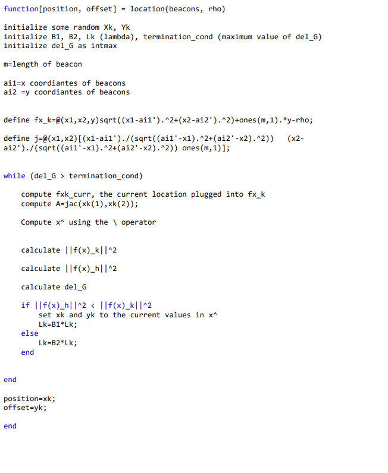
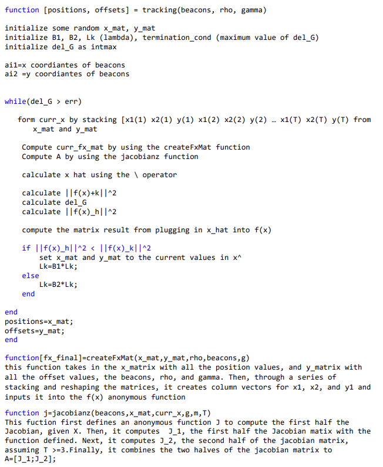

Levenberg Marquardt Algorithm Implementation
The The Levenberg Marquardt Algorithm is an algorithm used in mathematics to solve for non-linear least squares problems. It can be used for instance, in GPS tracking to estimate positions or refine trajectory calculations. It combines the gradient descent and Gauss-Newton methods.
I crreated a script in Matlab that uses the Levenberg Marquardt Algorithm to track the x and y positions of a moving object. Pictured below is a graph of the results.

Here is some pseudocode describing how I implemented the program in MATLAB
 